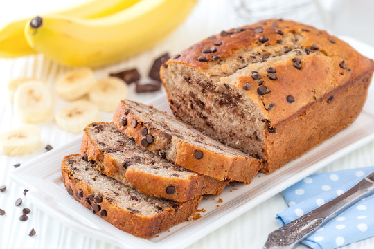

Description
Banana bread is a family favorite and easy to bake and serve
Ingredients
- 4 ripe bananas, mashed
- butter
- brown sugar
- eggs
- sour cream or yogurt, to taste
Steps
- preheat oven to 350 degrees
- mash your bananas if you have not already done so
- combine bananas with butter, eggs, and sour cream or yogurt
- mix in brown sugar a little at a time until you have a nice dough.
- bake at 350 for 45 minutes
- allow to cool before slicing